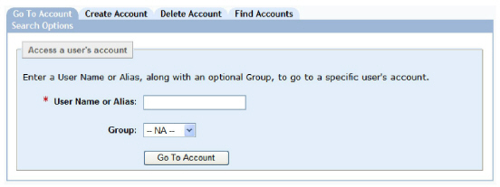
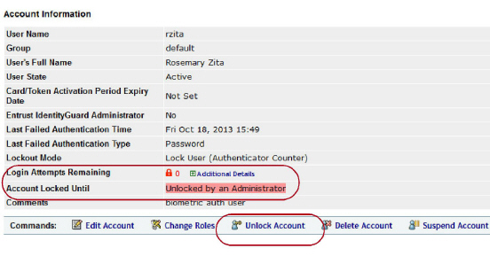
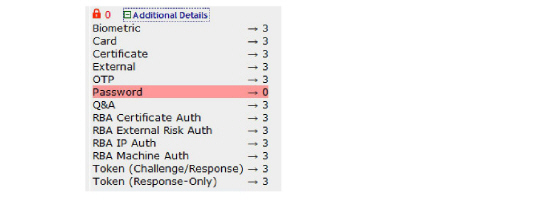
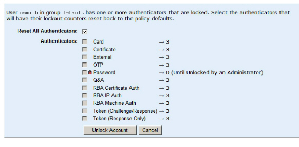
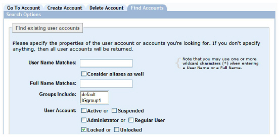
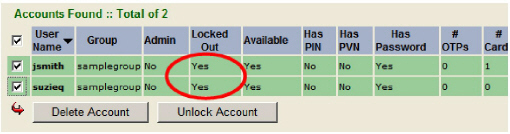

|
IdentityGuard Server 12.0 Administration Guide |
|
IdentityGuard Server 12.0 Administration Guide |
A user’s authenticator may become locked if the user fails to authenticate to your system after a certain number of attempts. Locking out an authenticator ensures that an attacker cannot complete a brute force attack.
The number of times that users can enter an incorrect authentication before they are locked out of the system is defined by policy (see Configuring lockout policies).
When locked out, users must either contact an administrator to reset their account, or wait until the lockout time expires (if lockout expiry is allowed by policy).
This topic contains the following procedures:
● To unlock a user’s account and view their lockout count
● To unlock an administrative account
● To unlock accounts for multiple users simultaneously
To unlock a user’s account and view their lockout count
1. Log in to the Entrust IdentityGuard Administration interface as the administrator.
 On the
Windows computer where Entrust IdentityGuard is installed
On the
Windows computer where Entrust IdentityGuard is installed
2. In the main menu, click User Accounts.
The User Accounts page appears.

3. In the User Name or Alias field, enter the user name or alias of the locked-out user.
4. Optional. In the Group drop-down list, select the user’s group.
5. Click Go To Account.
The View Account page appears.
Note: When a user is locked out, the Unlock Account command appears for that user. If the user is not locked out, it does not appear.

6. View the Login Attempts Remaining field. A zero and a red lock icon indicate that the user is locked out of at least one of their authenticators, and possibly all of them, depending on the lockout mode assigned to them. (See IP/Geolocation policies for details.)
7. Next to Login Attempts Remaining, click Additional Details to see the lockout counters for each authenticator. The authenticator that is locked out is highlighted and shows no authentication attempts remaining.

Note: The Additional Details link might not be visible depending on the user’s lockout mode.
8. Click Unlock Account.
9. If you see a dialog box that asks you to confirm that you want to unlock the account, click OK.
The account becomes unlocked. Also, the user’s lockout counters are reset, as follows:
– If your lockout policy has its Lockout Mode set to Lock User (Authenticator Counter), or Lock Authenticator (Authenticator Counter), then all the individual authenticator lockout counters are reset to their original values (as specified in the lockout policy).
– If your lockout policy has its Lockout Mode set to Lock User (Global Counter), then the global counter is reset to its original value (as specified in the lockout policy).
10. If you are using the Lock Authenticator (Authenticator Counter) lockout mode, you see the following page:

If you see a page like the one shown above, do one of the following:
● Select Reset All Authenticators and then click Unlock Account. The user account is unlocked and the user can begin using all of his authenticators again. Also, all of the user’s authenticators’ lockout counters are reset to their original values.
OR
● Select the authenticator that is locked, and any other authenticators whose lockout counters you want to reset, and click Unlock Account. The selected authenticators become unlocked and the user can use them again. Also, the counters for the selected authenticators are reset to their original values.
To unlock an administrative account
Note: Use this
procedure if you have been locked out of the Administration interface.
If you cannot complete this procedure for whatever reason, other options
are:
— Wait until the lockout time expires (if lockout expiry is allowed by
policy).
— Have another administrator unlock the administrator account using the
Administration interface. The administrator doing the unlocking must have
a sufficiently powerful role. For more information about roles, see Configuring
roles.
1. Log in to the Master user shell. See Using the Master user shell.
2. Enter the following command:
user set <adminID> -clearLock
For example,
user set igadmin -clearLock
The administrator is now unlocked and can access the Administration interface.
To unlock accounts for multiple users simultaneously
Note: You can also use this procedure to reset the lockout counts to their default values even when a user is not yet locked out.
3. Log in to the Entrust IdentityGuard Administration interface as the administrator.
On the
Windows computer where Entrust IdentityGuard is installed
2. In the main menu, click User Accounts.
3. Click the Find Accounts tab.

4. Select Locked.
5. To specify how many search results are displayed per page, select a number from the Showing results per page drop-down list.
6. Click Find Accounts.
The Search Results page displays all users with locked user accounts.

7. Select the check box beside each of the users you want to unlock, or select the check box beside User Name to select every user.
8. Click Unlock Account.
The user accounts are unlocked and the users can again attempt to log in. Also note that all lockout counters for the selected users—both per-authenticator counters and global counters—are reset to their original values. For more information about lockout counters, see the description of the Lockout Mode setting in the section IP/Geolocation policies.
You can also unlock users using bulk operations. For more information, see Managing multiple users with bulk operations.